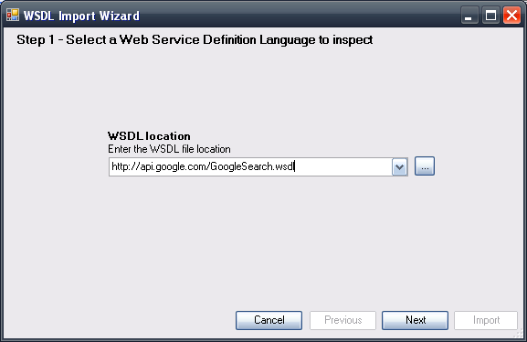
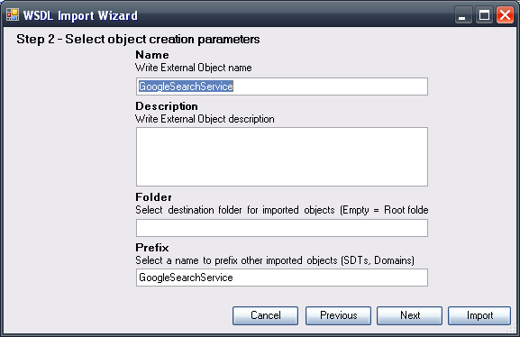
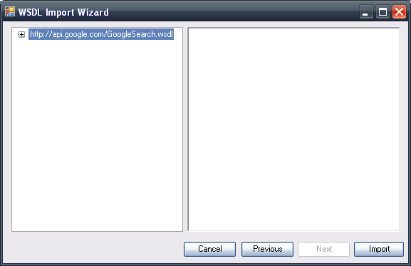

The WSDL Inspector allows you to define, from the WSDL of a web service, an External Object of the WSDL type and the required data types in GeneXus to use the web service in a transparent manner, without worrying about the protocols involved in the process and its definition. Step 1:Access the WSDL Import wizard through Tools/Application integration and indicate the WSDL path:  Step 2:Indicate the name to be given to the External Object (EO), its description, folder and prefix. 

|
| Backlinks | |
| Business Component - Publication as Web Service | Category:External object |